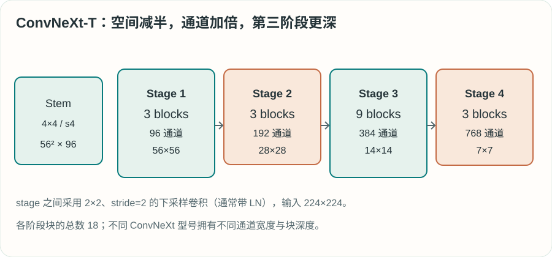
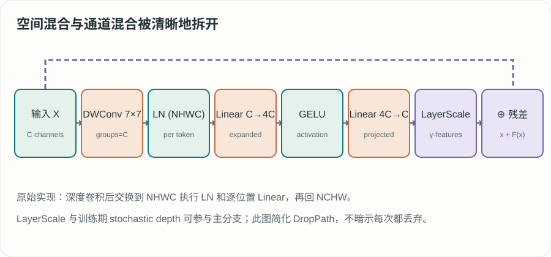
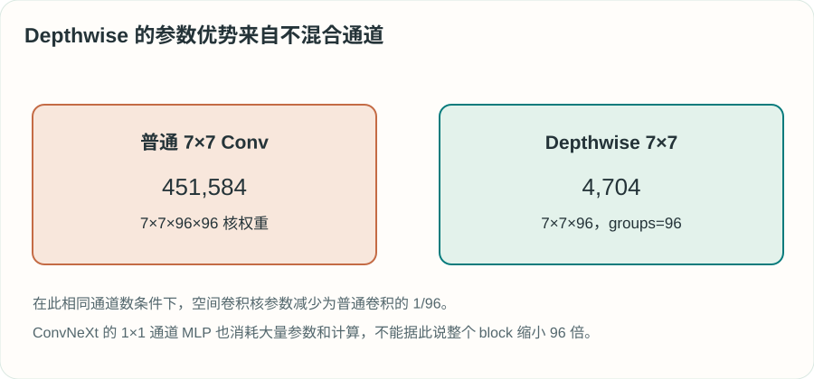

CHAPTER 12 · MODERN CONVNETS
ConvNeXt：重新设计 CNN 的计算单元
当训练配方与宏观结构逐渐接近时，卷积架构还能怎样竞争？把 depthwise、7×7 大核、通道 MLP 和残差的每一步成本算出来。
ViT 流行之后，为何还要研究卷积？
视觉 Transformer 的进展引出了一个实验方法论问题：同一代训练配方、优化器、正则化和算力预算下，卷积是不是仍有竞争力？《A ConvNet for the 2020s》通过逐步改造 ResNet，试图把架构差异和“旧配方比不过新配方”的干扰分开。论文探索的是可比较的现代 ConvNet，并不是宣称 ViT 或 Swin 已被淘汰。
ConvNeXt 的 2022 年原论文将大部分改变归纳为训练配方、网络宏观结构、ResNeXt 风格的分组卷积、反向瓶颈、激活和归一化的选择等。每一步实验数值依赖指定模型、ImageNet-1K 设置及消融顺序，脱离上下文单独复制一个提升百分点会导致误导。
宏观结构：从 ResNet 的阶段布局变为 ConvNeXt
以 ConvNeXt-T（Tiny）为例，输入 224×224 先经过 kernel=4、stride=4 的 stem，空间降为 56×56、通道为 96。随后四个 stage 的 block 深度为 [3,3,9,3]，通道 [96,192,384,768]，对应输出空间 56²,28²,14²,7²。stage 之间采用独立的下采样层，便于区分“改变通道”和“处理特征”的职责。

它与 ViT 的 patchify 在“最初减少空间分辨率”这一局部操作上类似，但仍通过分层卷积逐步构造多尺度特征。不能把它称为“使用 self-attention 的 CNN”：原始 ConvNeXt 主干保持纯卷积空间混合。
ConvNeXt block 的计算顺序究竟是什么？
原始 ConvNeXt 实现的核心 block 先做 7×7 depthwise convolution，每个输入通道有自己的空间核。接着变换到 NHWC，在最后一维应用 LayerNorm，再通过两个逐位置的线性层，把通道从 C 扩展到 4C，GELU 激活后投影回 C。最后可使用 LayerScale 和 stochastic depth，回到原始布局后与输入相加。

概念公式省略 DropPath 与张量格式变换，γ 表示逐通道 LayerScale；DW 为深度空间卷积、PW 为逐位置通道映射。
LayerNorm 在 NHWC 上归一化每个空间位置的通道，不能简单把 nn.LayerNorm(C) 直接用于 NCHW 张量末尾维。BatchNorm 与 LayerNorm 的统计轴和训练/推理行为也不同。
Depthwise 为什么省参数？节省多少？
普通 7×7、输入输出均为 96 通道的卷积，其核参数数目是 7×7×96×96=451584。depthwise 的 groups=96 时，每个通道对应一个 7×7 核，核参数只有 7×7×96=4704。该例中空间卷积核参数少了 96 倍，但 block 还包含两层线性映射（近似 8C² 个权重），整体参数不会减少同样倍数。

内存访问和硬件内核效率也会影响延迟；depthwise 算术量更少，不代表所有设备上均能按同一比例加速。论文对不同操作设计的性能收益是在其训练与推理设置中报告的，不能泛化为所有 GPU/CPU。
可运行的小型 ConvNeXt 风格残差块
以下用 PyTorch CPU 搭建一条完整的可微分主分支，输入 NCHW，LayerNorm 处理 NHWC，最后回到 NCHW 相加。省略了原论文训练中使用的 DropPath 和 LayerScale 初始化策略，因此是机制验证，不是论文训练复现。
import torch
from torch import nn
class TinyConvNeXtBlock(nn.Module):
def __init__(self, channels=8):
super().__init__()
self.dw = nn.Conv2d(channels, channels, 7, padding=3, groups=channels)
self.norm = nn.LayerNorm(channels, eps=1e-6)
self.expand = nn.Linear(channels, channels * 4)
self.act = nn.GELU()
self.project = nn.Linear(channels * 4, channels)
def forward(self, x):
y = self.dw(x).permute(0, 2, 3, 1)
y = self.project(self.act(self.expand(self.norm(y))))
return x + y.permute(0, 3, 1, 2)
torch.manual_seed(12)
block = TinyConvNeXtBlock(8)
x = torch.randn(2, 8, 16, 16, requires_grad=True)
out = block(x)
assert out.shape == x.shape
out.mean().backward()
assert x.grad is not None and torch.isfinite(x.grad).all()
assert block.dw.weight.shape == (8, 1, 7, 7)
assert 7 * 7 * 96 * 96 == 451584
assert 7 * 7 * 96 == 4704
print("shape:", tuple(out.shape))ConvNeXt、ConvNeXt V2 与现代实现有何不同？
本页所说的是 Liu 等 2022 年发表的原始 ConvNeXt。ConvNeXt V2（2023）引入了与掩码自编码训练等相关的进一步改动，例如 Global Response Normalization (GRN)，不应把这些组件倒填回原版 ConvNeXt 的结构表。不同模型规模的通道、块数、训练分辨率和权重版本都可能变化。
对论文性能进行横向比较时，要分别记录 ImageNet-1K 或 ImageNet-22K 预训练、是否使用额外数据、分辨率、训练 epoch、测试裁剪与评估类型。一个较高的 Top-1 不是“纯卷积必胜”的数学结论，而是在已明示实验条件下的结果。
检查理解：depthwise 卷积能自动混合不同通道的信息吗？
不能。groups=C 时每组仅一个输入通道；通道混合主要由 1×1 卷积或等价的逐位置 Linear 投影完成。
原始论文与代码
所有示意参数来自给定形状的算术；请勿将玩具 block 的测试当成 ImageNet 基准复现。